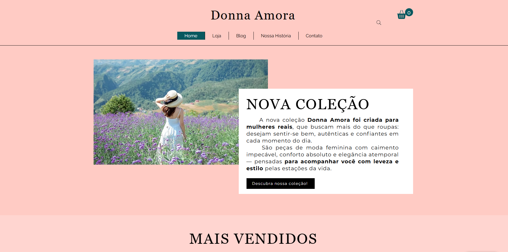

Marca, conteúdo, loja e relacionamento
A Donna Amora foi pensada como uma experiência integrada, onde estética e estrutura trabalham juntas para sustentar uma marca mais forte.
MODA FEMININA
Um projeto pensado para transformar identidade, sensibilidade e experiência em uma presença digital elegante, feminina e memorável.
A Donna Amora foi pensada como uma experiência integrada, onde estética e estrutura trabalham juntas para sustentar uma marca mais forte.
O projeto combina feminilidade, delicadeza e clareza visual para construir uma atmosfera de marca mais refinada e mais conectada com o público.
A Donna Amora nasce da combinação entre delicadeza visual e presença. Cada decisão estética foi pensada para comunicar acolhimento, estilo, autenticidade e valor.
Mais do que apresentar produtos, o projeto busca construir uma atmosfera reconhecível, capaz de sustentar marca, conteúdo e relacionamento com a mesma coerência.
“Quando identidade, conteúdo e experiência caminham juntos, a marca deixa de apenas aparecer — e passa a ser lembrada.”
O projeto também se desdobra em peças de Instagram pensadas para sustentar a identidade da Donna Amora em diferentes contextos de comunicação.
A estética das peças amplia a percepção da Donna Amora como marca real: elegante, sensível e visualmente consistente.
Peças que informam e inspiram, reforçando a marca como referência visual.
Comunicação com sensibilidade e identidade, mantendo o tom humano da marca.
A Donna Amora foi pensada como um ecossistema visual: vitrine, conteúdo, identidade institucional e presença social dialogando com a mesma linguagem.

O ambiente visual foi pensado para traduzir a Donna Amora como marca com identidade, ambientação e clareza de leitura.
Produto, organização e estética trabalhando juntos para elevar percepção de valor.
Uma frente pensada para ampliar repertório, gerar conexão e sustentar recorrência.
Esta página apresenta a Donna Amora dentro do portfólio, reunindo sua identidade, suas peças visuais e sua estrutura digital em uma leitura mais curada.
Para explorar a experiência completa — incluindo navegação, páginas e interação — acesse o site oficial do projeto.
Acessar experiência completamarca, conteúdo, loja e relacionamento em um só ambiente